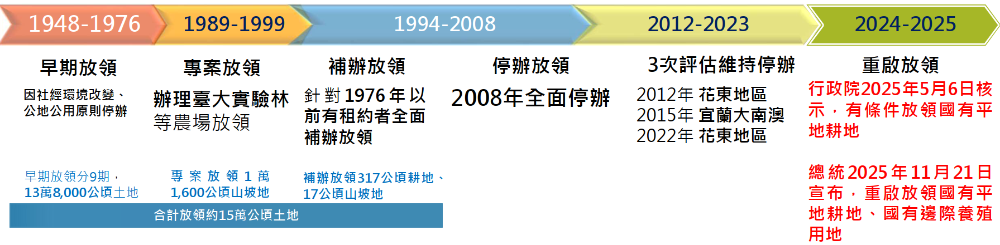

公地放領政策
內文
• 一、法源 中華民國憲法第143條：國家對於土地之分配與整理，應以扶植自耕農及自行使用土地人為原則。
• 二、意義 為扶持自耕農並倡導耕者有其田政策，政府乃率先辦理公地放領以為示範。所謂公地放領，就是政府將公有耕地開放，供合於資格之農民承領，農民在繳清地價取得土地所有權後，即成為自地自耕並自己享受全部耕作成果之自耕農。
• 三、目的 (一)落實憲法「扶植自耕農」政策 (二)消弭地主壟斷，提升社會公平 (三)持有土地所有權以鼓勵農地農用 (四)有助提高耕作、投資和土地利用效率，促進農業生產力 (五)基於過往政策背景，還地於民、保障權利
• 四、背景 為落實憲法扶植自耕農政策，政府自1948年起推動三階段放領，總計放領約15萬公頃土地。
[圖片1]
其中，第一階段公地放領之原因，係因在1947、1948年間，臺灣依舊發生了許多激烈的農民抗爭事件，而其對象大抵都是對準臺糖公司，例如，溪湖糖廠、埔里糖廠、虎尾糖廠、後壁林糖廠、及高雄縣各糖廠等，農民抗爭的原因是由於臺糖欲將其租用之土地收回自營，對原耕作佃農的任意撤佃起耕所致。
至於第二階段公地放領之原因，主要原因乃是因為來臺的國民政府並未依土地法的規定進行土地總登記，而是以土地權利憑證繳驗來取代土地總登記，遂使得許多臺人的土地權利遭致嚴重剝奪所致。
• 五、重啟公地放領之原則 (一)依法行政 (二)信賴保護 (三)國土保育
• 六、申請資格 (一)1976年9月24日前承租國有平地耕地（農牧用地或養殖用地） (二)符合「國有耕地放領實施辦法」、「國有邊際養殖用地放領實施辦法」規定 全國約近2,000公頃、4,445位農民
• 七、爭議與討論
• (一) 效率面
-
資格認定及審查疑義 因政策設有承租期限等資格要件，實務上易生自耕農認定、耕作年限計算及租賃契約合法性之爭議；加以年代久遠資料查核不易，將造成資格認定疑義與審查效率低之問題。
-
未農地農用之投機 公地放領後，投機者可能會出現農地轉用、閒置、轉賣等情形。
-
農用效率降低 放領後將原本較大規模且完整的國有耕地，經過後續繼承、分割等過程，逐漸變成小規模、零碎化，而難以維持規模效益，影響農業競爭力。
• (二) 公平面
-
未被納入者之不公平疑義 以租賃期限一刀切方式，將對承租期較晚、或契約關係不明者未被納入者，出現不公平疑義。
-
世代剝奪感 對於目前積極投入農業的新農或青農，可能會有相對剝奪感。
• 八、相關建議 (一)建議建置國有土地承租契約及耕作證明資料庫，並與財政部、內政部及地方政府進行資料串聯。 (二)建立透明且可追溯之申請審議與申訴機制，以降低爭議並提升政府公信力。 (三)運用無人機、衛星影像資料等科技技術，監控土地違規使用情形，並依據規定執行查察控管，以確保農地農用。 (四)建立農地所有權轉讓限制，考慮訂定農地轉作、出售前優先回收條款。 (五)建立農地閒置懲罰機制，以確保農地農用。 (六)建議配合青年農民、精緻農業、有機農業輔助計畫，並與產業鏈、地方政府協作，推動農村經營升級。透過輔導、補助、創新農業模式，實現土地所有權提升後的生產力提升。
資料來源：
-
行政院，2025.11.27，重啟公地放領政策說明。
-
徐世榮教授，2025.11.25，為何要公地放領？
-
公地放領政策有待商榷 - 日報 - 工商時報
-
萃抬菁，重啟公地放領讓地於民，到底是實踐土地正義還是造成更大的不公平？ | 城市學，城市學網站。
-
內政部：公地放領土地維持農地農用 兼顧農業永續 - 政治 - 自由時報電子報
文章圖片

注：本文圖片存放於 ./images/ 目錄下